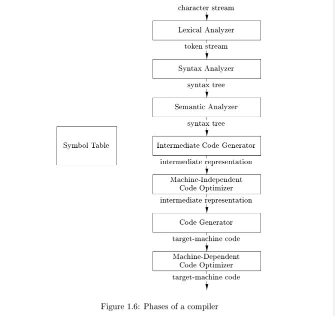

1.2 The Structure of a Compiler#
Up to this point we have treated a compiler as a single box that maps a source program into a semantically equivalent target program. If we open up this box a little, we see that there are two parts to this mapping:
- analysis
- synthesis
The analysis part breaks up the source program into constituent pieces and imposes a grammatical structure on them. It then uses this structure to create an intermediate representation of the source program. If the analysis part detects that the source program is either syntactically ill formed or semantically unsound, then it must provide informative messages, so the user can take corrective action. The analysis part also collects information about the source program and stores it in a data structure called a symbol table, which is passed along with the intermediate representation to the synthesis part.
The synthesis part constructs the desired target program from the intermediate representation and the information in the symbol table.
The analysis part is often called the front end of the compiler; the synthesis part is the back end.
If we examine the compilation process in more detail, we see that it operates as a sequence of phases, each of which transforms one representation of the source program to another. A typical decomposition of a compiler into phases is shown in Fig. 1.6. In practice, several phases may be grouped together, and the intermediate representations between the grouped phases need not be constructed explicitly.
The symbol table, which stores information about the entire source program, is used by all phases of the compiler.
NOTE: 符号表也是一门科学，需要对它仔细研究，本书中涉及符号表的章节有：
1.2.1 Lexical Analysis
1.2.7 Symbol-Table Management
- 2.7 Symbol Tables
除此之外，下面是关于符号表的一些扩展知识：
- 维基百科的Symbol table，内容非常好，本章节中收录了这篇文章。
Questions:
- CPython symbol table
- Clang symbol table

Some compilers have a machine-independent optimization phase between the front end and the back end. The purpose of this optimization phase is to perform transformations on the intermediate representation, so that the back end can produce a better target program than it would have otherwise produced from an unoptimized intermediate representation. Since optimization is optional, one or the other of the two optimization phases shown in Fig. 1.6 may be missing.
NOTE: 图1.6给出了一个compiler的架构，这个架构是清晰的，作为一名软件工程师，我们可以尝试思考一下如何来实现一个编译器，如下是两种策略：
- 分开实现各个部件然后将它们组装成一个完整的编译器，每个部件可以独立工作（耦合度低）
- 所有功能集成起来形成一个monolithic compiler，不能独立地使用其中某个部件（耦合度高）
目前c系语言中最流行的两款编译器：gcc和clang。在clang的官方网站的文章Clang vs Other Open Source Compilers中，给出了这两款编译器的对比（各自的长处与短处），下面是两种的差异之一：
Clang is designed as an API from its inception, allowing it to be reused by source analysis tools, refactoring, IDEs (etc) as well as for code generation. GCC is built as a monolithic static compiler, which makes it extremely difficult to use as an API and integrate into other tools. Further, its historic design and current policy makes it difficult to decouple the front-end from the rest of the compiler.
显然，clang所采取的是第一种策略，gcc所采取的是第二种策略，正如在这篇文章中作者提出的观点
differences in goals lead to different strengths and weaknesses
我觉得是非常正确的。在clang的官方文档中，将clang的这种设计策略称为：Library Based Architecture。
这两款编译器的架构所采取的截然不同的两种策略是软件设计领域一个非常典型的问题。
抛开软件设计不谈，回归本书。本书所讲述的是编译器的设计原理，是纯理论上的，如图1.6所展示的编译器的构成，本书会分章节来介绍编译器各个部分的设计原理，从前端到后端。实践是有助于理论的理解的，所以我们必须要使用一些工具来验证这些理论。clang作为一个工业级别的完整的、成熟的编译器，它实现了图1.6所展示的编译器的各个部分，而且它的Library Based Architecture，使得基本上编译器的每个部分都对应为它的一个库，这些库有着简洁的API，并且文档详尽，所以我们可以使用clang来作为学习编译器各个部件的好工具。
除此之外，python也可以作为学习编译原理的非常好的工具：
- Design of CPython’s Compiler¶，其中给出cpython编译器的设计
- Python Language Services¶，这是python标准库提供的module，these modules support tokenizing, parsing, syntax analysis, bytecode disassembly, and various other facilities.
结合这些工具，我们能够详尽地观察编译器各个部件的工作原理。
1.2.1 Lexical Analysis#
The first phase of a compiler is called lexical analysis or scanning. The lexical analyzer reads the stream of characters making up the source program and groups the characters into meaningful sequences called lexemes. For each lexeme, the lexical analyzer produces as output a token of the form
<token-name, attribute-value>
that it passes on to the subsequent phase, syntax analysis. In the token, the first component token-name is an abstract symbol that is used during syntax analysis, and the second component attribute-value points to an entry in the symbol table for this token. Information from the symbol-table entry is needed for semantic analysis and code generation.
For example, suppose a source program contains the assignment statement
position = initial + rate * 60 (1.1)
The characters in this assignment could be grouped into the following lexemes and mapped into the following tokens passed on to the syntax analyzer:
-
positionis a lexeme that would be mapped into a token<id, 1>, whereidis an abstract symbol standing for identifier and1points to the symbol-table entry forposition. The symbol-table entry for an identifier holds information about the identifier, such as its name and type. -
The assignment symbol
=is a lexeme that is mapped into the token<=>. Since this token needs no attribute-value, we have omitted the second component. We could have used any abstract symbol such as assign for the token-name, but for notational convenience we have chosen to use the lexeme itself as the name of the abstract symbol. -
initialis a lexeme that is mapped into the token<id, 2>, where2points to the symbol-table entry forinitial. -
+is a lexeme that is mapped into the token<+>. -
rateis a lexeme that is mapped into the token<id, 3>, where 3 points to the symbol-table entry forrate. -
*is a lexeme that is mapped into the token<*>. -
60is a lexeme that is mapped into the token<60>.
Technically speaking, for the lexeme
60we should make up a token like<number, 4>, where 4 points to the symbol table for the internal representation of integer60but we shall defer the discussion of tokens for numbers until Chapter 2. Chapter 3 discusses techniques for building lexical analyzers.
Blanks separating the lexemes would b e discarded by the lexical analyzer.
Figure 1.7 shows the representation of the assignment statement (1.1) after lexical analysis as the sequence of tokens
<id, 1> <=> <id, 2> <+> <id, 3> <?> <60> (1.2)

NOTE: Lexical Analysis主要在Chapter 3 Lexical Analysis中讲述。
1.2.2 Syntax Analysis#
The second phase of the compiler is syntax analysis or parsing. The parser uses the first components of the tokens produced by the lexical analyzer to create a tree-like intermediate representation that depicts the grammatical structure of the token stream. A typical representation is a syntax tree in which each interior node represents an operation and the children of the node represent the arguments of the operation. A syntax tree for the token stream (1.2) is shown as the output of the syntactic analyzer in Fig. 1.7.
This tree shows the order in which the operations in the assignment position = initial + rate * 60 are to be performed. The tree has an interior node labeled * with <id, 3> as its left child and the integer 60 as its right child. The node <id, 3> represents the identifier rate. The node labeled * makes it explicit that we must first multiply the value of rate by 60. The node labeled + indicates that we must
add the result of this multiplication to the value of initial. The root of the tree, labeled =, indicates that we must store the result of this addition into the location for the identifier position. This ordering of operations is consistent with the usual conventions of arithmetic which tell us that multiplication has
higher precedence than addition, and hence that the multiplication is to be performed before the addition.
The subsequent phases of the compiler use the grammatical structure to help analyze the source program and generate the target program. In Chapter 4 we shall use context-free grammars to specify the grammatical structure of programming languages and discuss algorithms for constructing efficient syntax analyzers automatically from certain classes of grammars. In Chapters 2 and 5 we shall see that syntax-directed definitions can help specify the translation of programming language constructs.
1.2.3 Semantic Analysis#
The semantic analyzer uses the syntax tree and the information in the symbol table to check the source program for semantic consistency with the language definition. It also gathers type information and saves it in either the syntax tree or the symbol table, for subsequent use during intermediate-code generation.
An important part of semantic analysis is type checking, where the compiler checks that each operator has matching operands. For example, many programming language definitions require an array index to be an integer; the compiler must report an error if a floating-point number is used to index an array.
The language specification may permit some type conversions called coercions. For example, a binary arithmetic operator may be applied to either a pair of integers or to a pair of floating-point numbers. If the operator is applied to a floating-point number and an integer, the compiler may convert or coerce the integer into a floating-point number.
In Fig. 1.7, notice that the output of the semantic analyzer has an extra node for the operator inttofloat, which explicitly converts its integer argument into a floating-point number. Type checking and semantic analysis are discussed in Chapter 6.
1.2.4 Intermediate Code Generation#
In the process of translating a source program into target code, a compiler may construct one or more intermediate representations, which can have a variety of forms. Syntax trees are a form of intermediate representation; they are commonly used during syntax and semantic analysis.
After syntax and semantic analysis of the source program, many compilers generate an explicit low-level or machine-like intermediate representation, which we can think of as a program for an abstract machine. This intermediate representation should have two important properties: it should be easy to produce and it should be easy to translate into the target machine.
In Chapter 6, we consider an intermediate form called three-address code, which consists of a sequence of assembly-like instructions with three operands per instruction. Each operand can act like a register. The output of the intermediate code generator in Fig. 1.7 consists of the three-address code sequence
In Chapter 6, we cover the principal intermediate representations used in compilers. Chapter 5 introduces techniques for syntax-directed translation that are applied in Chapter 6 to type checking and intermediate-code generation for typical programming language constructs such as expressions, flow-of-control constructs, and procedure calls.
1.2.5 Code Optimization#
The machine-independent code-optimization phase attempts to improve the intermediate code so that better target code will result. Usually better means faster, but other objectives may be desired, such as shorter code, or target code that consumes less power. For example, a straightforward algorithm generates the intermediate code (1.3), using an instruction for each operator in the tree representation that comes from the semantic analyzer.
A simple intermediate code generation algorithm followed by code optimization is a reasonable way to generate good target code. The optimizer can deduce that the conversion of 60 from integer to floating point can be done once and for all at compile time, so the inttofloat operation can be eliminated by replacing the integer 60 by the floating-point number 60.0. Moreover, t3 is used only once to transmit its value to id1 so the optimizer can transform (1.3) into the shorter sequence
t1 = id3 * 60.0
id1 = id2 + t1 (1.4)
There is a great variation in the amount of code optimization different compilers perform. In those that do the most, the so-called "optimizing compilers," a significant amount of time is spent on this phase. There are simple optimizations that significantly improve the running time of the target program without slowing down compilation too much. The chapters from 8 on discuss machine-independent and machine-dependent optimizations in detail.
1.2.6 Code Generation#
The code generator takes as input an intermediate representation of the source program and maps it into the target language. If the target language is machine code, registers or memory locations are selected for each of the variables used by the program. Then, the intermediate instructions are translated into sequences of machine instructions that perform the same task. A crucial aspect of code generation is the judicious assignment of registers to hold variables.
For example, using registers R1 and R2, the intermediate code in (1.4) might get translated into the machine code
LDF R2, id3
MULF R2, R2, #60.0
LDF R1, id2
ADDF R1, R1, R2
STF id1, R1 (1.5)
1.2.7 Symbol-Table Management#
An essential function of a compiler is to record the variable names used in the source program and collect information about various attributes of each name. These attributes may provide information about the storage allocated for a name, its type, its scope (where in the program its value may b e used), and in the case of procedure names, such things as the number and types of its arguments, the method of passing each argument (for example, by value or by reference), and the type returned.
The symbol table is a data structure containing a record for each variable name, with fields for the attributes of the name. The data structure should be designed to allow the compiler to find the record for each name quickly and to store or retrieve data from that record quickly. Symbol tables are discussed in Chapter 2.
1.2.8 The Grouping of Phases into Passes#
1.2.9 Compiler-Construction Tools#
The compiler writer, like any software developer, can profitably use modern software development environments containing tools such as language editors, debuggers, version managers, profilers, test harnesses, and so on. In addition to these general software-development tools, other more specialized tools have been created to help implement various phases of a compiler.
These tools use specialized languages for specifying and implementing specific components, and many use quite sophisticated algorithms. The most successful tools are those that hide the details of the generation algorithm and produce components that can be easily integrated into the remainder of the compiler. Some commonly used compiler-construction tools include
- Parser generators that automatically produce syntax analyzers from a grammatical description of a programming language.
- Scanner generators that produce lexical analyzers from a regular-expression description of the tokens of a language.
- Syntax-directed translation engines that produce collections of routines for walking a parse tree and generating intermediate code.
- Code-generator generators that produce a code generator from a collection of rules for translating each operation of the intermediate language into the machine language for a target machine.
- Data-flow analysis engines that facilitate the gathering of information about how values are transmitted from one part of a program to each other part. Data-flow analysis is a key part of code optimization.
- Compiler-construction toolkits that provide an integrated set of routines for constructing various phases of a compiler.
We shall describe many of these tools throughout this book.
NOTE:
Wikipedia的Comparison of parser generators总结了parser generator和scanner generator。